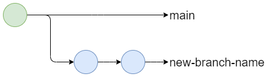
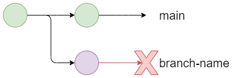
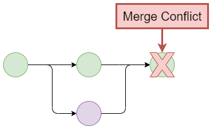
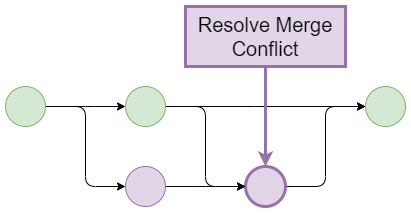

Using Git Collaboratively
TLDR
- Collaborating on a project can sometimes get messy with hard work and important changes sometimes being overwritten and lost.
- Branches allow you to create a parallel version of the repository and safely work on a new feature isolated from the rest of the repository.
- Your default branch is called the main branch and should remain stable and protected with completed, reviewed changes being merged in from feature branches.
- You can change to an existing branch with
git checkout other-branch-name - New branches can be created with
git checkout --branch new-branch-namecommand and then published withgit push --set-upstream origin new-branch-name. - Branches can be deleted locally with
git branch --delete branch-nameand remotely withgit push origin --delete branch-name. - You can merge changes from a different branch into your current branch
with
git merge source-branch-name - Pull Requests allows you to assign reviewers to check your changes before you make a merge via GitHub. Merge Requests are GitLabs implementation of this.
- Sometimes Git needs help resolving conflicting changes when making a merge. It will clearly tell you where the conflicts are in the code so you can go through them and choose what to keep.
Why should I care?
The benefits of using branches are:
- It allows multiple changes to be worked on in parallel and conflicting changes to be resolved.
- It allows a clean, stable version of code to be maintained on your main branch.
- It encourages peer review of code.
Pre-requisites
| Pre-requisite | Importance | Note |
|---|---|---|
| Introduction to Git | Necessary | It is important to get an understanding of Git before starting to use it to collaborate |
Introduction to Collaborating
When working with others (or even just yourself), it is good to divide and conquer the project, breaking it down into more manageable chunks of different features. Some of those features might be nice and discrete, with minimal interaction; however, some might be more entwined and blurred together.
This is where collaborating on a project can sometimes get messy. Changes can be tangled together, and hard work might be overwritten accidentally and lost. In addition, changes will take a differing amount of time to implement, meaning some might be done, while some might still be messy work in progress.
Git allows you to create branches and separate out those changes. Branches can be thought of as different parallel versions of the repository, with changes being made separately from each other. Meanwhile, a stable main branch of the code is kept clean from incomplete changes. Any new changes are first made to the branches.
Once the changes have been made, a pull request can be created for them to be reviewed and approved before being merged safely into the main branch, with any overlapping changes being highlighted as merge conflicts to be resolved.
This model of using branches with a shared repository is called the Shared Repository Model.
Branches
Working with branches is straightforward and powerful. There are four core operations you can do to a branch; change, create, delete, and merge.
Changing your branch
!!! "Viewing your current branches"
You can view your current branches with the command `git branch`; this will display a list of branches local to your environment. Add the `-r` command to see remote branches only or `-a` to see both local and remote branches.
You can change your branch with the git checkout command:
If the branch doesn't yet exist locally to your system and only on the remote repository, then it will be downloaded and checked out.
Local and Remote Branches
When you are working with a repository with a remote version stored online, there are two versions of it, the local version and the remote version.
These won't automatically be kept in sync; we have to tell Git when to push local changes to the remote and pull remote changes to the local. This applies for branches as well, and we have to manually tell Git when to send or receive and then apply updates.
In fact, it is very common to have whole branches that are only local to your systems (usually, when you first create them, then you'll want to publish them to have a backup) and branches that are only remote to your systems (usually branches created by others that you don't need to use).
Try it out!
Have a go at changing branches in our working with branches walkthrough.
Creating a Branch

You can create a branch with the git branch command:
However, this does not automatically checkout the command and put you on this new branch. Any new commits will be applied to the old branch. Therefore, it is better to use the git checkout command with the --branch flag to tell it first to create the branch and THEN change it.
- This command actually does two things.
- It creates a new branch:
git branch new-branch-name - Then it checks it out:
git checkout new-branch-name
- It creates a new branch:
Typically, we will create new branches from whichever branch we are currently on. However, there are times when you might want to specify the source branch from which you are creating the new branch. To do this, simply specify the source branch after the new branch name:
- Again, this command actually does two things.
- It creates a new branch:
git branch new-branch-name - Then it checks it out:
git checkout new-branch-name
- It creates a new branch:
Try it out!
Have a go at creating a branch in our working with branches walkthrough.
Branch Naming Schemes
It is good to have an agreed scheme in your team and your repositories when naming branches. This will allow you to communicate important aspects of the branch.
We advise something like <branch type>/<project id>-<initials>-<ticket number>-<brief description>, but you can use, add, and drop different parts of this where it suits you.
For example, this guide could be added to this repository under the branch feature/DS_218-JW-NV-1476-Update-the-Using-Git-Collaboratively-Guide with:
feature/, the branch typeDS_218, the internal project id for RAPJW, the branch author's initialsNV-1476, the JIRA ticket numberUpdate-the-Using-Git-Collaboratively-Guide, a short description of the branch.
There are a number of branch types a repository might have:
feature/- for adding new featuresrelease/- for preparing or preserving a batch of changes for deliveryhotfix/- for emergency fixes to your main branch (if it is protected)
Publishing a branch
If you have created a branch locally on your system, then you will need to publish it to the remote repository. This can be done using the git push with the --set-upstream flag (-u for short) and specifying the remote alias, which is almost always origin:
Why do we write origin?
origin is the default alias we give to the remote repository we clone from. This alias can be changed and can be checked using the git remote command to show the alias.
Use git remote -v to also see the URLs associated with the remote alias. There will always be two, the fetch (download) and push (upload). Note that these two URLs will often be the same.
This only needs to be done once for a new branch. After that, Git will know which remote branch to work with.
Remote Branches
If the new branch was created remotely, e.g. on GitHub or GitLab, and then checked out to the local environment, then it does not need to be published. Git will already know which remote branch to track.
Deleting your branch

When deleting our branches, we must remember that there are two copies of a branch, one local and one remote (assuming that the branch has been previously checked out to your system). Therefore there are two separate commands for deleting the branch locally and remotely.
-
Delete the local version of the branch
-
Delete the remote version of the branch
Info
While this deletes the versions of the branch that you can reach, collaborators that have also checked out that branch will still have a copy of that branch, communicate with them that you have deleted the remote for the branch so that they know to prune their repository.
Try it out!
Have a go at deleting your branch in our working with branches walkthrough.
Pruning your local repository
As development on your repository goes on, branches will be deleted remotely but might still exist on your local system. Therefore it is good to periodically prune any local branches that no longer have a counterpart on the remote. This can be done with a git fetch with the --prune flag:
Fetch dry run
If you want to check what will happen when you run the git fetch command (in this example, what branches will be pruned), then add the --dry-run --verbose to get an output of what would be done without making changes.
Merging your branch
As you complete work on your feature branches, you will want to move those changes back into the main branch, although hopefully after a review and resolving any conflicting changes. To move these changes in, we are going to use the git merge command.
Ensuring the branches are updated with changes
Before we merge, it is important to ensure that both the local version's source branch (the one we are merging from) and target branch (the one we are merging to) are both up to date with changes from the remote repository.
Try it out!
Have a go at merging branches in our working with branches walkthrough.
Updating your branch
As you collaborate and work on multiple branches in your project’s repository, you might want to ensure that your branch is updated with changes from other branches, usually the main branch. This allows us to prevent future conflicts or resolve current conflicts.
Pull Requests
A Pull request (PR) is how you announce to other collaborators that you've finished your changes, and you're ready to merge them - usually into the main branch of the repository. Then, either your collaborators or someone you assign will review your changes to ensure they are ready to be merged. The equivalent term for GitLab users is Merge Request (MR).
On the Pull request page, there are four tabs:

Conversation is the main pull request page. It contains the pull request's description, timeline, and comments the assignee or reviewer left. To merge a pull request, you have three options:
- Merge pull request: this will keep the entire commit history of the source branch and add it to the target branch. Creates a symbolic commit.
- Squash and merge: ticking this will merge the history of commits for the source branch into one commit. This can be useful when the pull request is not a major update, and you don't want your repository's history of commits to contain commits with messages such as "fixed typo" or "replaced incorrectly placed image". Creates a merged commit.
- Rebase and merge: add all source branch commits in front of the target branch's commits. Does not create a symbolic commit.
The Commits tab displays a history of the pull request's commits. So, for example, if the reviewer decides that minor adjustments are required, and the assignee pushes these changes to Gitlab, then these commits will be captured in this tab.
In the Files changed tab, can you see all the new changes in the pull request's source branch. You can also opt for a side-by-side comparison and see line-by-line how the master version and new branch version compare. You can also leave comments on any line of any file, which will also be recorded in the Conversation tab's timeline.
Checks is part of the GitHub Actions functionality, which enhances your code review processes with apps and automated reviewing checks. This is inactive by default.
If you are happy to merge the two branches, then select the type of pull request you wish to apply, and the pull request should be completed in a few seconds.
Try it out!
Have a go at raising a pull request and conducting a review with our pull request walkthrough.
Merge Conflicts
While Git is an extremely powerful tool, it needs human intervention to resolve situations where there are conflicting changes.

Conflicts are usually caused by the same lines being changed on both branches. Git will attempt to automatically merge the branches like it did when we updated our branches, but when it encounters a conflict, it will stop auto merging and show a CONFLICT error, highlighting the files in which conflicts are occurring.
Auto merging practice/temperatures_function.py
CONFLICT (content): Merge Conflict in practice/temperatures_function.py
Automatic merge failed; fix conflicts and then commit the result.
Git will clearly mark the conflicting changes in the files and still automatically merge non-conflicting changes.
Different editors give us different tools for handling these merge conflicts, though the principles remain the same. Open the file(s) listed in the CONFLICT error and scroll to find the conflict. The conflict will be marked by these strange lines:
<<<<<<< HEAD
Changes in the current checked-out branch.
======
Incoming changes from the source branch
>>>>>>> source-branch-name
The top bit above the double line is what we have in our branch, represented by the <<<<<<< HEAD statement. The bottom bit is the same line but saved in the branch we are merging from, represented by the >>>>>>> source-branch-name statement.
To resolve the merge conflict, delete the line which you do not wish to keep, as well as anything to do with marking the conflict. So if we wanted to keep only what we had on the source branch, we would delete everything until we had just the line we wanted:
Then once all conflicts are resolved, we can stage and commit our merge.

If we wanted to cancel the merge, we can do so simply with the following command:
Try it out!
Have a go at resolving a merge conflict in our working with branches walkthrough.
Resolving Merge Conflicts in VS Code
There are many tools and integrations that make finding and resolving merge conflicts easier. This includes most IDEs with Git integrations, with one particularly feature-rich IDE integration in VSCode.
Note
Visual Studio Code has introduced a new method of resolving conflicts, the three-way Merge Editor. There are instructions below on how to use the Merge Editor. To check which instructions you need to use, check if Settings > Git > Merge Editor is enabled or disabled. If enabled, read the Merge Editor instructions. Otherwise, continue reading the instructions below.
In Visual Studio Code, you can open your file browser in the tools tab. Any files which have a merge conflict will have a little 'C' next to them here. Open the files which have these conflicts (in this case, temperatures_function.py).
Scroll in the document to find the conflict. You will notice these strange lines where conflict has occurred:
The top bit above the double line is what we have in our branch (our branch is represented by the <<<<<<< HEAD statement). This will be called the current change. The bottom bit is the same line but it's saved in the main branch (symbolised as >>>>>>> main). This will be called the incoming change.
Above the conflict, you'll see some options for what you can do. You can click accept current changes, accept incoming changes, or accept both changes. Picking one of these options will resolve the conflict.
Alternatively, you can go ahead and simply edit the conflicted file directly. Edit the area of conflict until you're satisfied -- making sure to remove the === line, the >>>>> line, and any duplicated code.
So, for example, if you wish to keep This line is the line in my branch, delete everything that's connected to the conflict so that it also shows this in your text editor:
When you're done, simply save the file.
Merge Editor
Like before with VS Code, you can open your file browser in the tools tab and find any files which have a merge conflict with a little 'C' next to them here. Open the files which have these conflicts.
Scroll in any of the three views to find the highlighted conflict. In the top two Theirs (incoming) and Yours (current) views, checkboxes are available to accept and combine changes in the incoming and current branches.
The Results view can be edited directly, with the other views updated accordingly.
Once complete, close the editor or click the Accept Merge button in the bottom right corner. If not all conflicts have been addressed, a warning will show.
Best Practices for Branches and Pull Requests
- The main branch should be kept in a good stable state (always deployable with a relevant README file).
- Developers create feature branches from the main branch (main trunk) and work on them.
- The developer only creates a short-lived feature branch (a branch from the trunk) to prevent the challenge of merging later on. Once they are done, they create pull requests in GitHub.
- The request gets reviewed by a team member or a group of developers (if it is a refactor or large changes). The comments on changes stay directly on the GitHub page, and there may be discussions about the changes.
- Once these are done and all compiling and testing is complete, the reviewer will complete the merge.
Protecting your main branch
It is good to keep your main branch stable and working. That way, new branches can be made without worrying about pollution from unfinished or unchecked work, and stakeholders/clients can easily see progress currently made. To keep it that way, you can protect the main branch, which will ensure no unauthorised changes are made to it.
Protecting a branch is not a feature built into Git, but instead a feature provided by remote repository hosts. Both GitHub and GitLab (as well as other remote repository providers) have the ability to restrict who and when a branch can be pushed to, merged into, locked, or deleted.
What Next?
As mentioned several times throughout this guide, there are a number of valuable walkthroughs that will guide you through using the powerful collaboration features we've discussed here:
External Links Disclaimer
NHS England makes every effort to ensure that external links are accurate, up to date and relevant, however we cannot take responsibility for pages maintained by external providers.
NHS England is not affiliated with any of the websites or companies in the links to external websites.
If you come across any external links that do not work, we would be grateful if you could report them by raising an issue on our RAP Community of Practice GitHub.